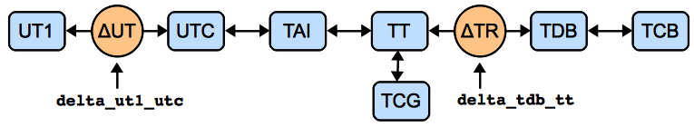

Time and Dates (astropy.time)¶
Introduction¶
The astropy.time package provides functionality for manipulating times and dates. Specific emphasis is placed on supporting time scales (e.g. UTC, TAI, UT1) and time representations (e.g. JD, MJD, ISO 8601) that are used in astronomy. It uses Cython to wrap the C language SOFA time and calendar routines. All time scale conversions are done by Cython vectorized versions of the SOFA routines and are fast and memory efficient.
Getting Started¶
The basic way to use astropy.time is to create a Time object by supplying one or more input time values as well as the time format and time scale of those values. The input time(s) can either be a single scalar like "2010-01-01 00:00:00" or a list or a numpy array of values as shown below. In general any output values have the same shape (scalar or array) as the input.
>>> from astropy.time import Time
>>> times = ['1999-01-01 00:00:00.123456789', '2010-01-01 00:00:00']
>>> t = Time(times, format='iso', scale='utc')
>>> t
<Time object: scale='utc' format='iso' vals=['1999-01-01 00:00:00.123' '2010-01-01 00:00:00.000']>
The format argument specifies how to interpret the input values, e.g. ISO or JD or Unix time. The scale argument specifies the time scale for the values, e.g. UTC or TT or UT1.
Now let’s get the representation of these times in the JD and MJD formats by requesting the corresponding Time attributes:
>>> t.jd
array([ 2451179.50000143, 2455197.5 ])
>>> t.mjd
array([ 51179.00000143, 55197. ])
We can also convert to a different time scale, for instance from UTC to TT. This uses the same attribute mechanism as above but now returns a new Time object:
>>> t2 = t.tt
>>> t2
<Time object: scale='tt' format='iso' vals=['1999-01-01 00:01:04.307' '2010-01-01 00:01:06.184']>
>>> t2.jd
array([ 2451179.5007443 , 2455197.50076602])
Note that both the ISO and JD representations of t2 are different than for t because they are expressed relative to the TT time scale.
Using astropy.time¶
Time object basics¶
In astropy.time a “time” is a single instant of time which is independent of the way the time is represented (the “format”) and the time “scale” which specifies the offset and scaling relation of the unit of time. There is no distinction made between a “date” and a “time” since both concepts (as loosely defined in common usage) are just different representations of a moment in time.
Once a Time object is created it cannot be altered internally. In code lingo it is immutable. In particular the common operation of “converting” to a different time scale is always performed by returning a copy of the original Time object which has been converted to the new time scale.
Time Format¶
The time format specifies how an instant of time is represented. The currently available formats are can be found in the Time.FORMATS dict and are listed in the table below. Each of these formats is implemented as a class that derives from the base TimeFormat class. This class structure can be easily adapted and extended by users for specialized time formats not supplied in astropy.time.
| Format | Class |
|---|---|
| byear | TimeBesselianEpoch |
| byear_str | TimeBesselianEpochString |
| cxcsec | TimeCxcSec |
| iso | TimeISO |
| isot | TimeISOT |
| jd | TimeJD |
| jyear | TimeJulianEpoch |
| jyear_str | TimeJulianEpochString |
| mjd | TimeMJD |
| unix | TimeUnix |
| yday | TimeYearDayTime |
Subformat¶
The time format classes TimeISO, TimeISO, and TimeYearDayTime support the concept of subformats. This allows for variations on the basic theme of a format in both the input string parsing and the output.
The supported subformats are date_hms, date_hm, and date. The table below illustrates these subformats for iso and yday formats:
| Format | Subformat | Input / output |
|---|---|---|
| iso | date_hms | 2001-01-02 03:04:05.678 |
| iso | date_hm | 2001-01-02 03:04 |
| iso | date | 2001-01-02 |
| yday | date_hms | 2001:032:03:04:05.678 |
| yday | date_hm | 2001:032:03:04 |
| yday | date | 2001:032 |
Time Scale¶
The time scale (or time standard) is “a specification for measuring time: either the rate at which time passes; or points in time; or both” [1]. See also [2] and [3].
>>> Time.SCALES
('tai', 'tcb', 'tcg', 'tdb', 'tt', 'ut1', 'utc')
| Scale | Description |
|---|---|
| tai | International Atomic Time (TAI) |
| tcb | Barycentric Coordinate Time (TCB) |
| tcg | Geocentric Coordinate Time (TCG) |
| tdb | Barycentric Dynamical Time (TDB) |
| tt | Terrestrial Time (TT) |
| ut1 | Universal Time (UT1) |
| utc | Coordinated Universal Time (UTC) |
| [1] | Wikipedia time standard article |
| [2] | SOFA Time Scale and Calendar Tools (PDF) |
| [3] | http://www.ucolick.org/~sla/leapsecs/timescales.html |
The system of transformation between supported time scales is shown in the figure below. Further details are provided in the Convert time scale section.
Scalar or Array¶
A Time object can hold either a single time value or an array of time values. The distinction is made entirely by the form of the input time(s). If a Time object holds a single value then any format outputs will be a single scalar value, and likewise for arrays.
>>> from astropy.time import Time
>>> t = Time(100.0, format='mjd', scale='utc')
>>> t.jd
2400100.5
>>> t = Time([100.0, 200.0], format='mjd', scale='utc')
>>> t.jd
array([ 2400100.5, 2400200.5])
Inferring input format¶
The Time class initializer will not accept ambiguous inputs, but it will make automatic inferences in cases where the inputs are unambiguous. This can apply when the times are supplied as a list of strings, in which case it is not required to specify the format because the available string formats have no overlap. However, if the format is known in advance the string parsing will be faster if the format is provided.
>>> t = Time('2010-01-02 01:02:03', scale='utc')
>>> t.format
'iso'
Internal representation¶
The Time object maintains an internal representation of time as a pair of double precision numbers expressing Julian days. The sum of the two numbers is the Julian Date for that time relative to the given time scale. Users requiring no better than microsecond precision over human time scales (~100 years) can safely ignore the internal representation details and skip this section.
This representation is driven by the underlying SOFA C-library implementation. The SOFA routines take care throughout to maintain overall precision of the double pair. The user is free to choose the way in which total JD is distributed between the two values.
The internal JD pair is available via the jd1 and jd2 attributes. Notice in the example below that when converting from UTC to TAI, the small offset is placed in the jd2 value thus maintaining the highest numeric precision:
>>> t = Time('2010-01-01 00:00:00', scale='utc')
>>> t.jd1, t.jd2
(2455197.5, 0.0)
>>> t2 = t.tai
>>> t2.jd1. t2.jd2
(2455197.5, 0.0003935185185185185)
Creating a Time object¶
The allowed Time arguments to create a time object are listed below:
- val : numpy ndarray, list, str, or number
- Data to initialize table.
- val2 : numpy ndarray, list, str, or number; optional
- Data to initialize table.
- format : str, optional
- Format of input value(s)
- scale : str, optional
- Time scale of input value(s)
- precision : int between 0 and 9 inclusive
- Decimal precision when outputting seconds as floating point
- in_subfmt : str
- Unix glob to select subformats for parsing string input times
- out_subfmt : str
- Unix glob to select subformats for outputting string times
- lat : float, optional
- Earth latitude of observer
- lon : float, optional
- Earth longitude of observer
val¶
The val argument is the only argument that is always required when creating a Time object. This argument specifies the input time or times and can be a single string or number, or it can be a Python list or numpy array of strings or numbers.
In most situations one also needs to specify the time scale via the scale argument. The Time class will never guess the time scale, so a simple example would be:
>>> t = Time('2010-01-01 00:00:00', scale='utc')
>>> t2 = Time(50100.0, format='mjd', scale='tt')
val2¶
The val2 argument is available for specialized situations where extremely high precision is required. Recall that the internal representation of time within astropy.time is two double-precision numbers that when summed give the Julian date. If provided the val2 argument is used in combination with val to set the second the internal time values. The exact interpretation of val2 is determined by the input format class. As of this release all string-valued formats ignore val2 and all numeric inputs effectively add the two values in a way that maintains the highest precision. Example:
>>> t = Time(100.0, 0.000001, format='mjd', scale='tt')
>>> t.jd, t.jd1, t.jd2
(2400100.500001, 2400100.5, 1e-06)
format¶
The format argument sets the time time format, and as mentioned it is required unless the format can be unambiguously determined from the input times.
scale¶
The scale argument sets the time scale and is required except for time formats such as ‘cxcsec’ (TimeCxcSec) and ‘unix’ (TimeUnix). These formats represent the duration in SI seconds since a fixed instant in time which is independent of time scale.
precision¶
The precision setting affects string formats when outputting a value that includes seconds. It must be an integer between 0 and 9. There is no effect when inputting time values from strings. The default precision is 3. Note that the limit of 9 digits is driven by the way that SOFA handles fractional seconds. In practice this should should not be an issue.
>>> t = Time('B1950.0', scale='utc', precision=3)
>>> t.byear_str
'B1950.000'
>>> t.precision = 0
>>> t.byear_str
'B1950'
in_subfmt¶
The in_subfmt argument provides a mechanism to select one or more subformat values from the available subformats for string input. Multiple allowed subformats can be selected using Unix-style wildcard characters, in particular * and ?, as documented in the Python fnmatch module.
The default value for in_subfmt is * which matches any available subformat. This allows for convenient input of values with unknown or heterogeous subformat:
>>> Time(['2000:001', '2000:002:03:04', '2001:003:04:05:06.789'], scale='utc')
<Time object: scale='utc' format='yday'
vals=['2000:001:00:00:00.000' '2000:002:03:04:00.000' '2001:003:04:05:06.789']>
One can explicitly specify in_subfmt in order to strictly require a certain subformat:
>>> t = Time('2000:002:03:04', scale='utc', in_subfmt='date_hm')
>>> t = Time('2000:002', scale='utc', in_subfmt='date_hm')
ERROR: ValueError: Input values did not match any of format classes
['iso', 'isot', 'yday']
out_subfmt¶
The out_subfmt argument is similar to in_subfmt except that it applies to output formatting. In the case of multiple matching subformats the first matching subformat is used.
>>> Time('2000-01-01 02:03:04', scale='utc', out_subfmt='date').iso
'2000-01-01'
>>> Time('2000-01-01 02:03:04', scale='utc', out_subfmt='date_hms').iso
'2000-01-01 02:03:04.000'
>>> Time('2000-01-01 02:03:04', scale='utc', out_subfmt='date*').iso
'2000-01-01 02:03:04.000'
lat and lon¶
These optional parameters specify the observer latitude and longitude in decimal degrees. They default to 0.0 and are used for time scales that are sensitive to observer position. Currently the only time scale for which this applies is TDB, which relies on the SOFA routine iauDtdb to determine the time offset between TDB and TT.
Using Time objects¶
There are three basic operations available with Time objects:
- Get the representation of the time value(s) in a particular time format.
- Get a new time object for the same time value(s) but referenced to a different time scale.
- Do time arithmetic involving Time and/or TimeDelta objects.
Get representation¶
Instants of time can be represented in different ways, for instance as an ISO-format date string ('1999-07-23 04:31:00') or seconds since 1998.0 (49091460.0) or Modified Julian Date (51382.187451574).
The representation of a Time object in a particular format is available by getting the object attribute corresponding to the format name. The list of available format names is in the time format section.
>>> t = Time('2010-01-01 00:00:00', format='iso', scale='utc')
>>> t.jd # JD representation of time in current scale (UTC)
2455197.5
>>> t.iso # ISO representation of time in current scale (UTC)
'2010-01-01 00:00:00.000'
>>> t.unix # seconds since 1970.0 (UTC)
1262304000.0
>>> t.cxcsec # SI seconds since 1998.0 (TT)
378691266.184
Convert time scale¶
A new Time object for the same time value(s) but referenced to a new time scale can be created getting the object attribute corresponding to the time scale name. The list of available time scale names is in the time scale section and in the figure below illustrating the network of time scale transformations.
Examples:
>>> t = Time('2010-01-01 00:00:00', format='iso', scale='utc')
>>> t.tt # TT scale
<Time object: scale='tt' format='iso' vals=2010-01-01 00:01:06.184>
>>> t.tai
<Time object: scale='tai' format='iso' vals=2010-01-01 00:00:34.000>
In this process the format and other object attributes like lat, lon, and precision are also propagated to the new object.
As noted in the Time object basics section, a Time object is immutable and the internal time values cannot be altered once the object is created. The process of changing the time scale therefore begins by making a copy of the original object and then converting the internal time values in the copy to the new time scale. The new Time object is returned by the attribute access.
Transformation offsets¶
Time scale transformations that cross one of the orange circles in the image above require an additional offset time value that is model or observation-dependent. See SOFA Time Scale and Calendar Tools for further details.
The two attributes delta_ut1_utc and delta_tdb_tt provide a way to set these offset times explicitly. These represent the time scale offsets UT1 - UTC and TDB - TT, respectively. As an example:
>>> t = Time('2010-01-01 00:00:00', format='iso', scale='utc')
>>> t.delta_ut1_utc = 0.334 # Explicitly set one part of the transformation
>>> t.ut1.iso # ISO representation of time in UT1 scale
'2010-01-01 00:00:00.334'
In the case of the TDB to TT offset, most users need only provide the lat and lon values when creating the Time object. If the delta_tdb_tt attribute is not explicitly set then the SOFA C-library routine iauDtdb will be used to compute the TDB to TT offset. Note that lat and lon are initialized to 0.0 by default, so those defaults will be used if they are not provided.
The following code replicates an example in the SOFA Time Scale and Calendar Tools document. It does the transform from UTC to all supported time scales (TAI, TCB, TCG, TDB, TT, UT1, UTC). This requires auxilliary information (latitude and longitude).
>>> lat = 19.48125
>>> lon = -155.933222
>>> t = Time('2006-01-15 21:24:37.5', format='iso', scale='utc',
... lat=lat, lon=lon, precision=6)
>>> t.delta_ut1_utc = 0.3341 # Explicitly set one part of the transformation
>>> t.utc.iso
'2006-01-15 21:24:37.500000'
>>> t.ut1.iso
'2006-01-15 21:24:37.834100'
>>> t.tai.iso
'2006-01-15 21:25:10.500000'
>>> t.tt.iso
'2006-01-15 21:25:42.684000'
>>> t.tcg.iso
'2006-01-15 21:25:43.322690'
>>> t.tdb.iso
'2006-01-15 21:25:42.683799'
>>> t.tcb.iso
'2006-01-15 21:25:56.893378'
Time Deltas¶
Simple time arithmetic is supported using via the TimeDelta class. The following operations are available:
- Create a TimeDelta explicitly by instantiating a class object
- Create a TimeDelta by subtracting two Times
- Add a TimeDelta to a Time object to get a new Time
- Subtract a TimeDelta from a Time object to get a new Time
- Add two TimeDelta objects to get a new TimeDelta
The TimeDelta class is derived from the Time class and shares many of its properties. The key difference is that the time scale is always TAI so that all time deltas are referenced to a uniform Julian Day which is exactly 86400 standard SI seconds.
The available time formats are:
| Format | Class |
|---|---|
| sec | TimeDeltaSec |
| jd | TimeDeltaJD |
Examples¶
Use of the TimeDelta object is easily illustrated in the few examples below:
>>> t1 = Time('2010-01-01 00:00:00', scale='utc')
>>> t2 = Time('2010-02-01 00:00:00', scale='utc')
>>> dt = t2 - t1 # Difference between two Times
>>> dt
<TimeDelta object: scale='tai' format='jd' vals=31.0>
>>> dt.sec
2678400.0
>>> from astropy.time import TimeDelta
>>> dt2 = TimeDelta(50.0, format='sec')
>>> t3 = t2 + dt2 # Add a TimeDelta to a Time
>>> t3.iso
'2010-02-01 00:00:50.000'
>>> t2 - dt2 # Subtract a TimeDelta from a Time
<Time object: scale='utc' format='iso' vals=2010-01-31 23:59:10.000>
>>> dt + dt2
<TimeDelta object: scale='tai' format='jd' vals=31.0005787037>
Reference/API¶
astropy.time.core Module¶
The astropy.time package provides functionality for manipulating times and dates. Specific emphasis is placed on supporting time scales (e.g. UTC, TAI, UT1) and time representations (e.g. JD, MJD, ISO 8601) that are used in astronomy.
Classes¶
| Time(val[, val2, format, scale, precision, ...]) | Represent and manipulate times and dates for astronomy. |
| TimeDelta(val[, val2, format, scale, copy]) | Represent the time difference between two times. |
| TimeFormat(val1, val2, scale, precision, ...) | Base class for time representations. |
| TimeJD(val1, val2, scale, precision, ...[, ...]) | Julian Date time format |
| TimeMJD(val1, val2, scale, precision, ...[, ...]) | Modified Julian Date time format |
| TimeFromEpoch(val1, val2, scale, precision, ...) | Base class for times that represent the interval from a particular epoch as a floating point multiple of a unit time interval (e.g. |
| TimeUnix(val1, val2, scale, precision, ...) | Unix time: seconds from 1970-01-01 00:00:00 UTC. |
| TimeCxcSec(val1, val2, scale, precision, ...) | Chandra X-ray Center seconds from 1998-01-01 00:00:00 TT |
| TimeString(val1, val2, scale, precision, ...) | Base class for string-like time represetations. |
| TimeISO(val1, val2, scale, precision, ...[, ...]) | ISO 8601 compliant date-time format “YYYY-MM-DD HH:MM:SS.sss...”. |
| TimeISOT(val1, val2, scale, precision, ...) | ISO 8601 compliant date-time format “YYYY-MM-DDTHH:MM:SS.sss...”. |
| TimeYearDayTime(val1, val2, scale, ...[, ...]) | Year, day-of-year and time as “YYYY:DOY:HH:MM:SS.sss...”. |
| TimeEpochDate(val1, val2, scale, precision, ...) | Base class for support floating point Besselian and Julian epoch dates |
| TimeBesselianEpoch(val1, val2, scale, ...[, ...]) | Besselian Epoch year as floating point value(s) like 1950.0 |
| TimeJulianEpoch(val1, val2, scale, ...[, ...]) | Julian Epoch year as floating point value(s) like 2000.0 |
| TimeDeltaFormat(val1, val2, scale, ...[, ...]) | Base class for time delta representations |
| TimeDeltaSec(val1, val2, scale, precision, ...) | Time delta in SI seconds |
| TimeDeltaJD(val1, val2, scale, precision, ...) | Time delta in Julian days (86400 SI seconds) |
| ScaleValueError | |
| OperandTypeError(left, right) | |
| TimeEpochDateString(val1, val2, scale, ...) | Base class to support string Besselian and Julian epoch dates such as ‘B1950.0’ or ‘J2000.0’ respectively. |
| TimeBesselianEpochString(val1, val2, scale, ...) | Besselian Epoch year as string value(s) like ‘B1950.0’ |
| TimeJulianEpochString(val1, val2, scale, ...) | Julian Epoch year as string value(s) like ‘J2000.0’ |
Class Inheritance Diagram¶
![Inheritance diagram of astropy.time.core.Time, astropy.time.core.TimeDelta, astropy.time.core.TimeFormat, astropy.time.core.TimeJD, astropy.time.core.TimeMJD, astropy.time.core.TimeFromEpoch, astropy.time.core.TimeUnix, astropy.time.core.TimeCxcSec, astropy.time.core.TimeString, astropy.time.core.TimeISO, astropy.time.core.TimeISOT, astropy.time.core.TimeYearDayTime, astropy.time.core.TimeEpochDate, astropy.time.core.TimeBesselianEpoch, astropy.time.core.TimeJulianEpoch, astropy.time.core.TimeDeltaFormat, astropy.time.core.TimeDeltaSec, astropy.time.core.TimeDeltaJD, astropy.time.core.ScaleValueError, astropy.time.core.OperandTypeError, astropy.time.core.TimeEpochDateString, astropy.time.core.TimeBesselianEpochString, astropy.time.core.TimeJulianEpochString](../_images/inheritance-f05ed97fe530c9b7a4ae43df9d317af9fd691f55.png)
Acknowledgments and Licenses¶
This package makes use of the SOFA Software ANSI C library. The copyright of the SOFA Software belongs to the Standards Of Fundamental Astronomy Board of the International Astronomical Union. This library is made available under the terms of the SOFA license.